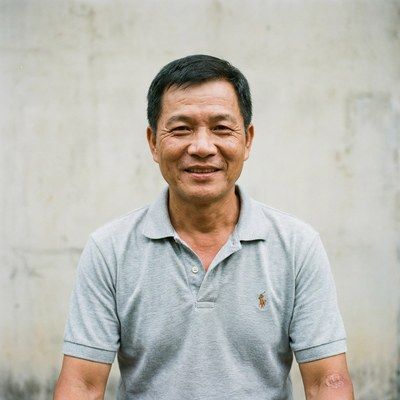
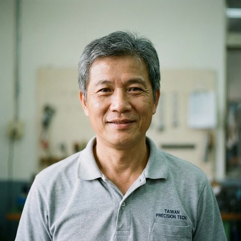
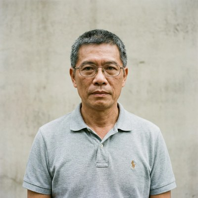

合作工班
認識我們的師傅
以下為示意資料，實際合作師傅以 LINE 媒合時確認為準

王師傅
資深結構漏水診斷
★★★★★ 5.0（12件）

陳師傅
科技抓漏・內視鏡定位
★★★★★ 4.9（18件）
林師傅
打針止漏・防水塗料
★★★★★ 4.8（24件）
張師傅
頂樓防水・外牆修復
★★★★★ 4.9（15件）

黃師傅
浴室重做・壁癌處理
★★★★★ 4.8（20件）
吳師傅
緊急應修・全台服務
★★★★★ 5.0（8件）
劉師傅
地下室・車庫防水
★★★★☆ 4.7（11件）

蔡師傅
高空作業・外牆防水
★★★★★ 4.9（9件）
許師傅
鐵皮屋・頂樓加蓋
★★★★☆ 4.6（7件）